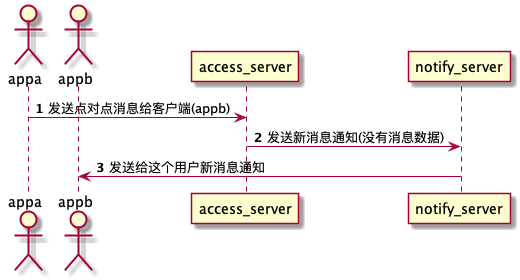

5.1.2 点对点的同步通知
当用户A 发送一条消息给B，发到接入服务器时，接入服务器或者路由服务，将给B 发送一条通知，通知这个用户有条新的消息。
客户端收到这个通知时,需要自己去服务端进行拉取数据。

3:通知服务器给客户端发送点对点的同步通知(IM_CMD_NOTIFY_SYNC=321)
这个消息带的包体为
// 消息结构.
message UserMsgSyncInfo {
int64 GroupId = 1;
int64 SyncKey = 2;
int64 OffSet = 3;
}